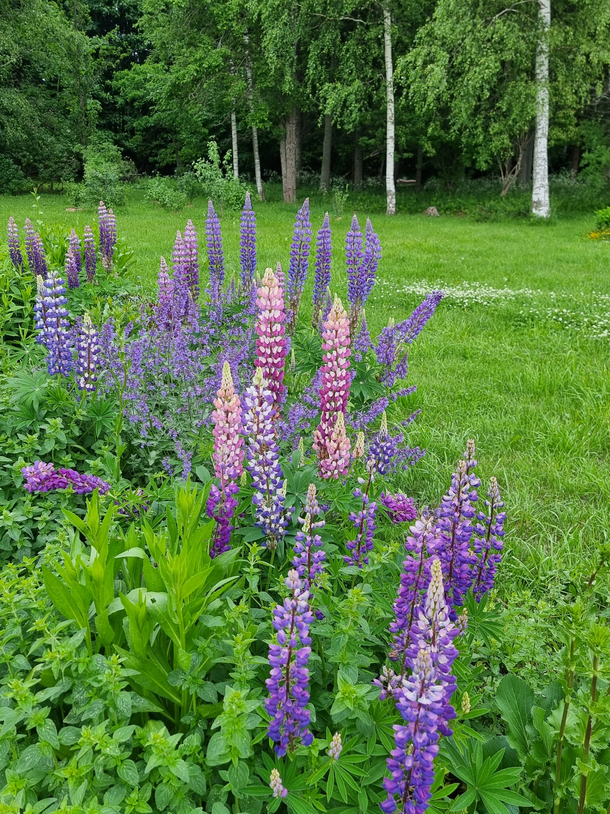

Meist
IGIAED
IGIAED on paik, kus kohtuvad aed, hooaeg, söödavad taimed ja lihtsad rõõmud. Siia lehele koguneb pildivoog talu tegemistest, saagist, õitsemisest ja igapäevastest hetkedest. Uued pildid lisame alati ettepoole, nii et kõige värskemad hetked on kohe esimesena näha.
Pildivoog
Hetked aiast ja talust
Lihtne Flickr-stiilis voog. Uuemad pildid on alati eespool.